SideKcK
A social wellness mobile app designed to help people find compatible training partners based on schedule and fitness goals.
Role
Co-founder owning product direction, design, testing, and team alignment
Team
Built and coordinated design, development, and marketing efforts
Process
Shared product ideas, aligned priorities, and planned next steps with the team
Product Experience
Optimized the end-to-end product flow for simpler access and stronger engagement
1. Background
SideKcK was originally-designed to help myself consistently plan and follow through with my own fitness regimen in order to improve my personal health. Among gym-goers ,giving up on their fitness routine is a widespread issue, so over the course of development, which began in the spring of 2016, I conducted much research into why this issue is so pervasive. A study from Indiana University determined that the percentage of gym-goers who dropped out of their routine was at a staggering 43% however, that rate dropped to an incredible 6.3% when paired with a training partner (or "gym buddy"). Thus, Sidekck matured into an app that assists all gym-goers in finding a gym buddy who meets their schedule and fitness goals to not only improve their bodily health, but their social and psychological well-being as well.
2. User Research
A necessity for any startup to survive and thrive is to find and properly serve its target market. My user group consisted of overseas students for three main reasons:
- Students who travel abroad are more susceptible to loneliness and homesickness. This increases the risk of isolated behavior and depression, contributing to a major reduction in physical activity. Therefore, a suitable gym buddy would incentivize overseas students to engage more socially whilst keeping a healthy fitness regimen. Combined, these will result in a boost in psychological well-being for students studying abroad and their chances of a satisfying experience.
- Working out with a gym buddy can become habitual, therefore leading to consistent benefits to health and well-being. Developing habits is less difficult at a young age, and overseas students are typically aged between 18 and 30. Plus, Indiana University calculated a 36.7% decrease in regimen dropouts for those who paired with a gym buddy, so the chances of habitual gym-partnering increases..
- Gym memberships at universities are typically free for students, so there is no cost in trying it out.
To sufficiently gauge our target market's opinions at the time, my co-founder and I distributed an online survey to gather data on how overseas students typically think about incorporating a gym buddy into their routine. From roughly 60 responses, 70.7% believed and even experienced the merit of a gym buddy, however, 74.1% still worked out alone.
The top three reasons for workout alone were schedule conflicts, a strong insecurity when asking for help, and a preference in finding a gym buddy with a higher level of fitness than themselves.
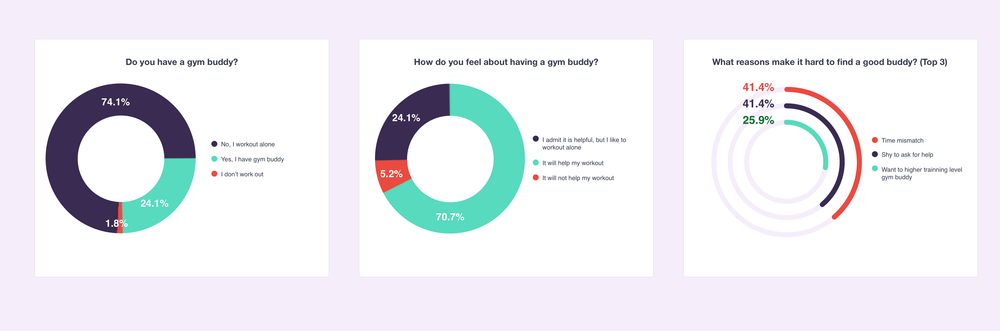
3. Ideation, Prototype, and Development
Students use social apps in their mobile phones for a variety of activities every day, so it was logical to have Sidekck launch as one. Since user research proved that students harbor insecurities about asking for help, Sidekck makes the first move for them and brings potential gym buddies directly into the palm of their hands. With a new user-friendly workflow, Sidekck users can publicly post their invitations to ask interested buddies to join their workouts, which makes it more convenient for fitness enthusiasts to find more like-minded and casual gym-goers.
Based on the user research, my team tried to find a way that helped people find the right gym buddy when they need. The users can post their invitations to the public and ask others to join their new workout. Also, it was convenient to join a workout plan from a neighbor gym enthusiast.
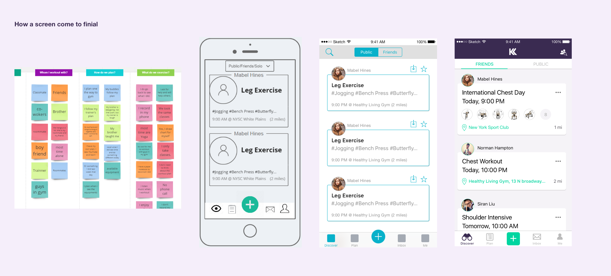
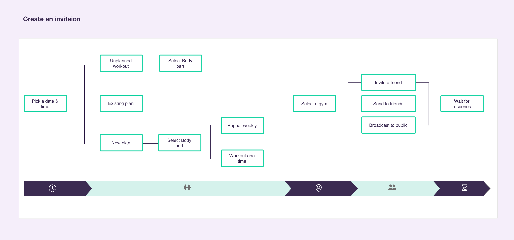
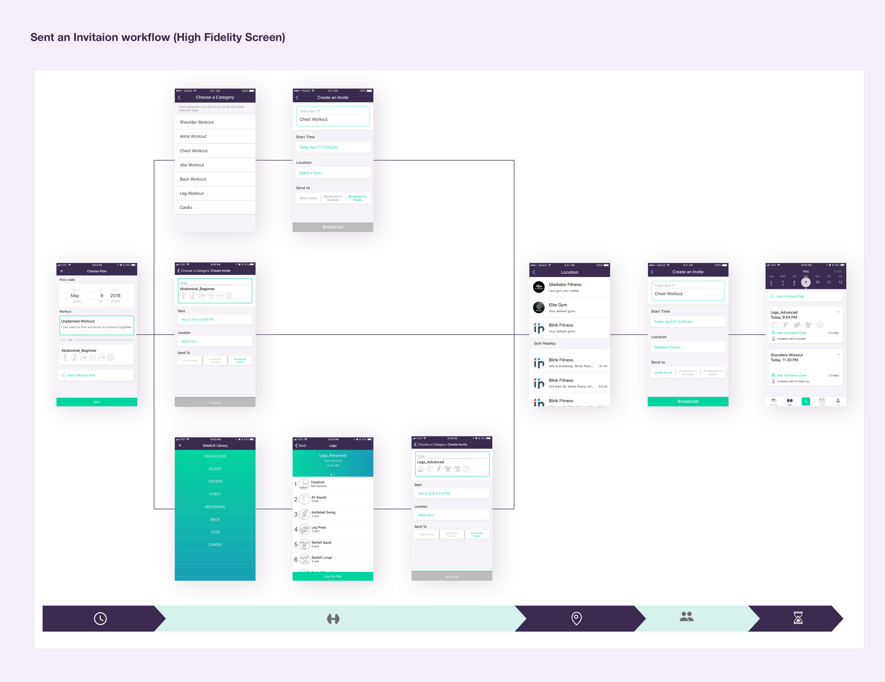
4. Testing and Redesign
Due to limited resources, I didn't have the chance to facilitate user testing until September 28th, 2016. I first released Sidekck on the Apple Store and sent invitations to potential buddies in order to test the overall usability of the app.
Testing revealed that first time users were confused on how to send invitations and create workout plans.This demanded the need for simplifying the user interface. For example, the multiple starting points the user faces when creating a workout plan not only confused them, but consumed too much time and patience, thereby reducing the chances of the user carrying through with the app's reward of finding a suitable gym buddy. Users also had difficulty finding upcoming workout plans they had already joined, further causing frustration.
To resolve these issues, the entire workflow was redesigned to improve usability and efficiency.
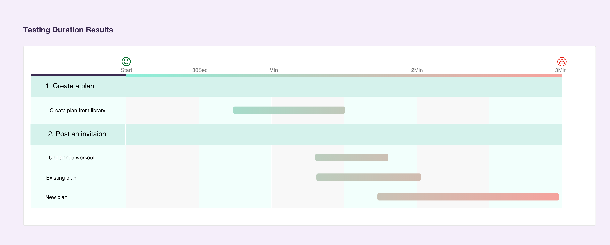
Multiple starting points for creating workouts confused users, so the workflow was simplified from 6 steps to 1, as shown below. We also simplified the process of posting and accepting invitations and in joining a workout by reducing them to one-click interactions. The overhaul of the entire app's workflow transformed it into an app that is efficient and easy-to-use.
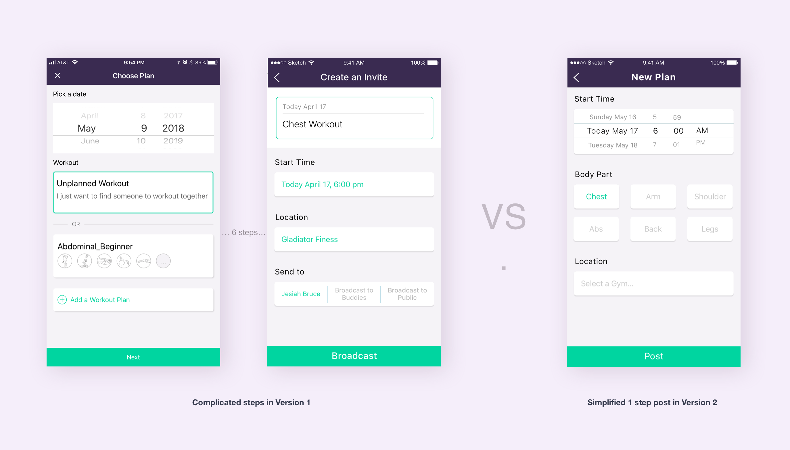
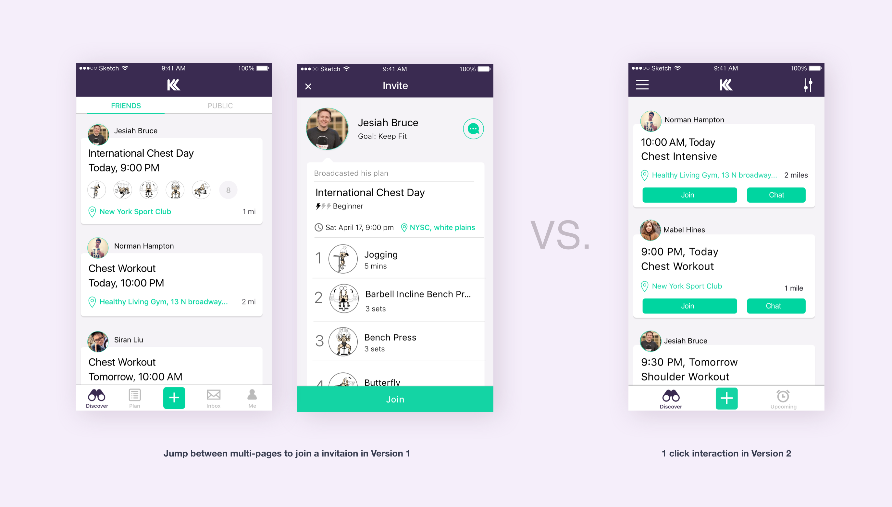
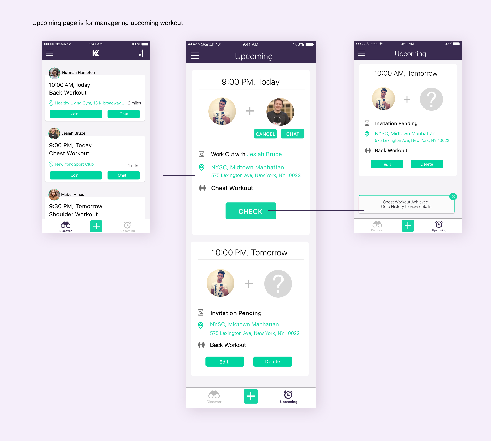
On April 28th, 2017, we held A/B Testing at a gym located at Times Square, New York City. We hosted an offline event and gathered 12 volunteers, all of whom were overseas students between the ages of 20 and 25 years old with an equal number of male and female participants.
The criteria for A/B testing were as follows:
- 1. The time it took for a user to post a workout plan.
- 2. The time it took for a user to understand the labels.
- 3. The time it took for a user to explore the menu screen(s).
- 4. The number of questions the user asked us as they proceeded through steps 1-3.
- 5. The reason for the users' questions asked from step 4.
- 6. What were the users' expectations of each page before they saw it on the app?
The results from the A/B Testing event showed a remarkable improvement in the efficiency of posting and joining a workout, as well as a major reduction in users' confusion and frustration with the interface. Below is a graphic comparing the original workflow to the redesigned versions:
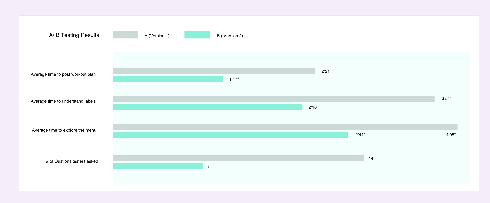
Our design specification was updated after each round of testing:
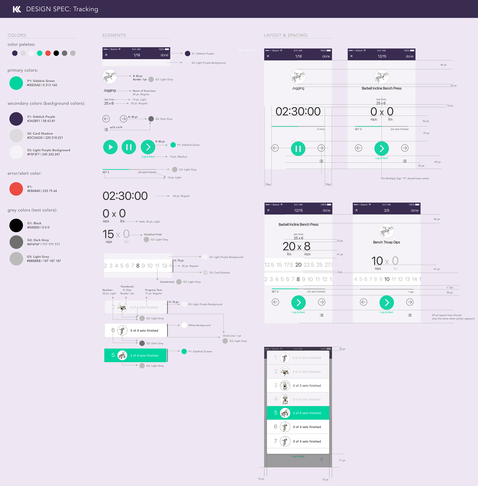
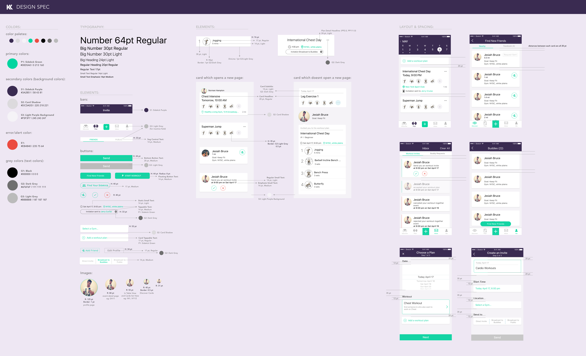

5. Takeaway
No matter the scale of your endeavor, the users' returning rate will measure the overall success of your business. How to frame users' pain points and adapt ideas to product are often the key to survival in a saturated market of startups. A successful startup therefore hinges upon strong design structure, passion from its founders, and constant redevelopment work to make a product function at its best for its target audience. It will prove a tumultuous journey into the unknown for the startup team, but one that can be equally rewarding.
That was the story of my startup for SideKck, a process which began in the spring of 2016 and officially closed in the winter of 2017. However, the Sidekck app is working and is still available on the Apple Store. Each member of our team shared the dream of our creation taking off and achieving high milestones, but what we did achieve gave us the invaluable luxury of lessons learned, a product we're proud of, and a worthwhile experience to cherish for the rest of our lives.